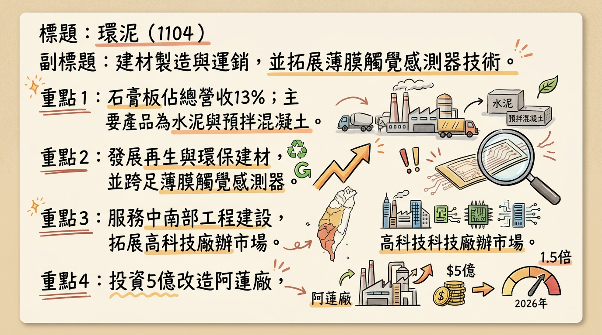
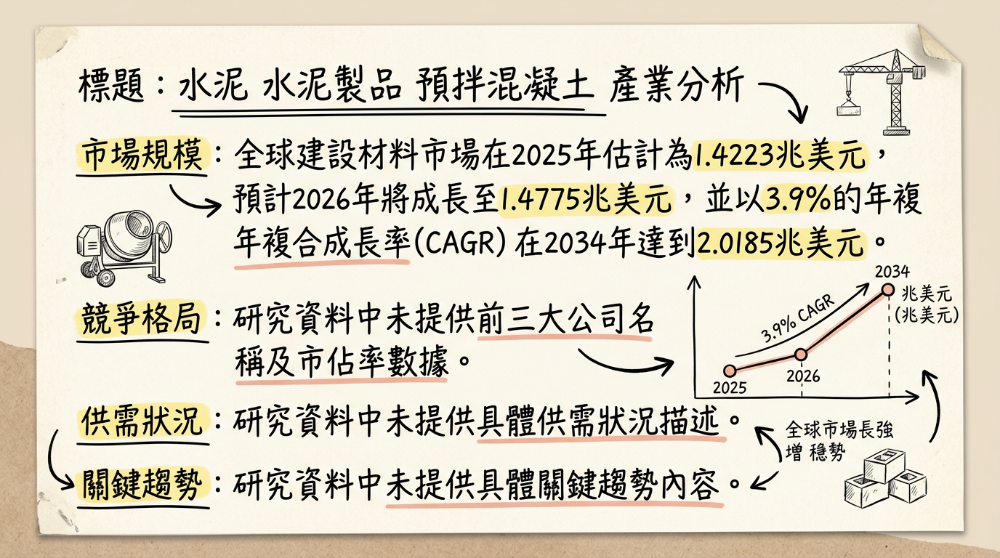
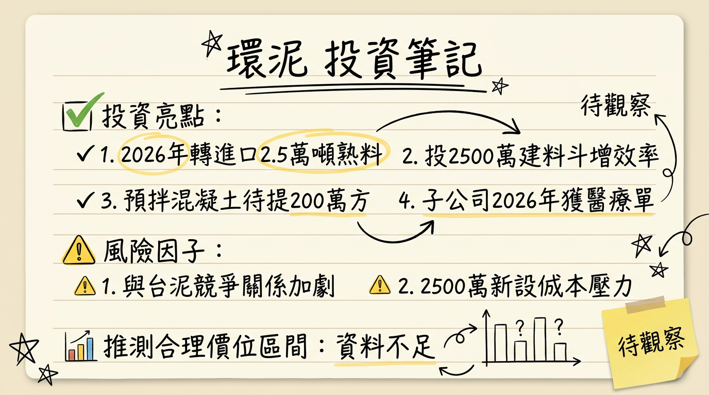

1104 環泥 深度研究報告
一句話摘要
環泥 (1104) 憑藉其在建材領域的綠色轉型與高科技廠辦訂單動能，以及電子事業（Tekscan）在AI與機器人感測器市場的布局，有望在2026年迎來溫和成長，然須關注傳統建材市場的競爭與營運成本壓力。
公司概覽
環泥科技股份有限公司成立於1959年，是一家歷史悠久的建材供應商。主要業務涵蓋水泥、預拌混凝土、石膏板等傳統建材的生產與運銷。近年來，公司積極發展綠色環保建材，並透過併購美國Tekscan跨足薄膜觸覺感測器與電子皮膚技術領域，展現多角化經營的策略。
產品線與營收結構
| 產品線分類 | 核心產品/服務 | 2025年Q3營收佔比（約） |
|---|
| 建材事業群 | | |
| 再生建材 | 再生混凝土、再生砂石 | - |
| 環保建材 | 環保水泥、低碳環保面層材料 | - |
| 常規建材 | 水泥、預拌混凝土、石膏板、混凝土塊、磚 | 水泥約22%、預拌混凝土約67%、石膏板約14% |
| 電子事業群 | | |
| 高科技感測 | 薄膜觸覺感測器、電子皮膚技術 | - |
環泥在台灣設有多個生產基地，其中中部基地產能最大，主要服務大型工程。南部基地則側重產品市場性與創新。
為滿足市場需求，公司正持續擴充產能：
- 嘉義及屏東兩座混凝土新廠預計在2026年中前投入營運，瞄準高科技廠辦需求，預計每月合計增加2萬立方米混凝土產能。
- 台南麻豆新廠已於2025年下半年營運。
- 阿蓮廠投入新台幣5億元進行改造精進計畫，預計在2026年完成設備更新，將水泥熟料研磨產能從現有4萬立方米提高1.5倍至6萬立方米。
所屬細分產業與相關題材
環泥所屬產業為「水泥工業」，是傳產-水泥類股與重要的預拌混凝土供應商。
相關題材包括：
- 綠色環保建材： 積極發展再生與低碳建材，符合ESG趨勢。
- 高科技廠辦需求： 已是台積電南科建廠預拌混凝土的唯二供應商，並積極爭取新竹、台中等高鐵特區與廠辦專案。
- 基礎建設與公共工程： 受惠於政府基建預算。
- 資產活化： 推動商辦大樓共同開發案以增加多元收入。
- 跨足電子高科技： 併購美國Tekscan，進入薄膜觸覺感測器與電子皮膚領域。
核心競爭優勢
市場領先地位與戰略客戶： 在台灣預拌混凝土市場擁有強勁地位，特別是成為台積電南科廠的唯二供應商，顯示其產品品質與供應能力獲得頂級客戶認可。
前瞻性綠色轉型： 積極投入再生建材與環保建材的研發與生產，符合全球ESG趨勢及政府政策，有助於爭取高附加價值訂單並提升品牌形象。
多角化經營與高科技跨足： 透過併購美國Tekscan，成功跨足高成長潛力的薄膜觸覺感測器與電子皮膚技術領域，為公司注入新的成長動能，擺脫傳統產業的週期性限制。
產能擴充與技術升級： 持續投資新廠建設（嘉義、屏東、麻豆）及既有工廠設備升級（阿蓮廠），提升產能效率與技術能力，以應對高科技廠辦及綠色建材的需求。
穩健的財務結構： 負債比率維持在健康水平，並連續16年配發股利，顯示公司經營穩健，具備長期發展的基石。
財務分析
月營收趨勢
| 月份 | 金額 (新台幣億元) | 月增率 (MoM) | 年增率 (YoY) |
|---|
| 22026年1月 | 7.18 | -7.82% | +4.42% |
| 2025年12月 | 7.79 | +22.35% | +3.14% |
| 2025年11月 | 6.37 | -11.93% | -6.76% |
| 2025年10月 | 7.23 | +2.21% | +12.63% |
| 2025年9月 | 7.07 | +17.30% | +18.05% |
| 2025年8月 | 6.03 | +4.86% | -7.58% |
季度數據 (2025年Q3最新數據)
- 2025年第三季合併營收： 18.85 億元 (7-9月合計)
- 2025年第三季營業毛利率： 21%
- 2025年第三季營業利益率： 14%
- 2025年第三季每股盈餘 (EPS)： 0.82 元
年度趨勢
* 全年營收：約 79.54 億元
* 全年EPS：2.16 元
* 全年營收：約 79.22 億元 (根據2025年12月累計營收)
* 全年EPS：預估 1.81 元
法說會重點
最近一次法說會日期： 2025年11月19日（統一綜合證券邀請）
管理層對各產品線的具體 guidance 與發言：
- 混凝土事業群： 受惠於高鐵特區開發、台積電廠辦、捷運、公共工程等專案，總待提量高達202萬立方米。已是台積電南科建廠預拌混凝土的唯二供應商，並積極爭取新竹、台中等高鐵特區與廠辦專案。
- 水泥與石膏板： 2025年第三季水泥銷售量較去年同期減少10%，石膏板銷售量較去年同期減少8%，混凝土銷售量較去年同期減少4%。
- 石膏板業務： 2025年下半年出貨量預期因高雄富邦人壽大樓、桃園第三航廈等大型建案帶動而微幅成長。公司擴大石膏板回收服務並開始收費，回收品再投入生產，目前添加比例約10-15%，未來目標持續提高。
- 電子事業群： 透過併購美國Tekscan，跨足薄膜觸覺感測器與電子皮膚技術領域。2025年醫療床業務預計售出2,000-3,000張。
產能利用率與資本支出金額：
- 資本支出： 水泥事業將投入約4億元進行設備更新與擴產，包括舊水泥磨更新（約1億元）及新增一套立磨系統（約3億元），預計於2025-2026年陸續完成。
- 新廠房擴展： 麻豆廠預計未來1-2年內投產，嘉義廠預計2026年投產。
- 未找到明確的產能利用率數據。
管理層給出的下季/下半年 guidance：
- 短期（未來6-12個月）： 傳統建材業務將維持相對穩定，主要受惠於台灣基礎建設與高科技廠辦的持續需求。預計能透過產品組合優化和效率提升，維持穩定的獲利能力。麻豆場及嘉義場的陸續投入營運，將進一步鞏固區域市場。
- 長期（2年以上）： 環泥的長期發展潛力來自於多元化策略，特別是電子事業群的成長。Tekscan的技術優勢和全球市場拓展，有望帶來顯著的營收與獲利增長。同時，建材領域的綠色轉型、循環經濟應用，以及商辦開發案，將提供穩定的長期收入。
券商觀點
券商目標價
目前未找到2024年以後來自三家券商的具體目標價。搜尋結果中提到的宏遠證券目標價29元為2022-2023年的預估，已過時。
EPS 預估
- 2025年 EPS 預估： 法人機構平均預估為 1.81 元。
- 2026年 EPS 預估： 法人機構平均預估稅後純益約15.4億元，預估 EPS 介於 2.2 至 2.29 元之間。
近期評等調動
- 2026年1月的報告指出，法人機構預估環泥2026年度稅後純益約15.4億元，較上月預估下調7.06%。這暗示了市場對環泥2026年獲利預期的調降。
財報深度分析
利潤率趨勢
| 季度 | 毛利率 | 營業利益率 | 稅後淨利率 |
|---|
| 2025年Q3 | 20.60% | 13.03% | 30.55% |
| 2025年Q2 | 22.20% | 15.20% | - |
| 2025年Q1 | 20.30% | 13.90% | - |
| 2024年Q4 | 20.90% | 13.20% | - |
| 2024年Q3 | 18.50% | 12.60% | - |
2025年Q3的營運報告顯示，儘管合併營收較去年同期略減2%，但營業淨利率達到14%，產品銷售表現穩健。毛利率為21%，營業淨利率為14%，稅後淨利率為22%，均較去年同期有所成長。這可能歸因於公司透過優化產品組合或提高平均售價來實現營收增長，即使混凝土銷售量有所下滑。水泥和石膏板業務的營收和銷售量則面臨挑戰，有所減少。環泥的主要營收來源為混凝土（67%）、水泥（22%）和石膏板（14%）。
存貨與營運
| 季度 | 存貨週轉天數 | 應收帳款收現天數 |
|---|
| 2025年Q3 | 31.64天 | 65.88天 |
| 2025年Q2 | 26.6天 | 62.96天 |
| 2025年Q1 | 21.79天 | 65.76天 |
| 2024年Q4 | 21.41天 | 58.12天 |
- 存貨週轉天數： 從2024年Q4的21.41天上升至2025年Q3的31.64天，顯示存貨去化速度變慢。
- 應收帳款收現天數： 從2024年Q4的58.12天上升至2025年Q3的65.88天，顯示公司收回帳款所需時間增加。
- 儘管週轉天數有所拉長，但目前沒有明確資料指出存貨有「異常」堆積或過度備料。這可能反映市場需求趨緩或產業競爭加劇。
資本支出
- 近3年資本支出金額與趨勢 (2024-2026年)： 環泥預計在2025年及2026年陸續投入約4億元資本支出，用於設備更新與擴產。主要項目包括舊水泥磨更新（約1億元）及新增一套立磨系統（約3億元）。
- 未來資本支出計畫與預計新增產能：
*
水泥事業群： 高雄阿蓮廠改造計畫，預計2026年完成，熟料研磨產能將從4萬方提高1.5倍至6萬方。
* 混凝土事業群： 台南麻豆廠（2025年下半年營運）和嘉義廠（預計2026年營運）兩座新混凝土廠，將為環泥每月合計增加2萬立方米混凝土產能。
- 折舊攤銷趨勢： 2025年Q3折舊為55,887千元，攤銷為1,335千元。
其他財報重點
- 負債比率： 2025年Q3為18.98%，較前一季下降10%，整體維持在健康水平（該季度為19%，較去年同期增加2%）。
- 自由現金流量： 2025年Q3為651,229千元，較Q2的-254,295千元顯著轉正，顯示營運現金流狀況改善。
- 業外收支： 2025年Q3營業外收支為6.24億元，較去年同期增加8%，主因股利收入較高（例如六禾機械對公司獲利貢獻超過三成）。
股權異動
- 近期董監事/大股東申報轉讓紀錄： 2024年4月，董監事增加5092張持股，價格約在32.65元附近。未找到2025-2026年更近期的紀錄。
- 庫藏股買回紀錄： 未找到2024年以後的庫藏股買回紀錄。
- 可轉換公司債 (CB) 發行： 未找到2024年以後發行可轉換公司債的最新資料。
- 增減資計畫： 未找到2024年以後的現金增資或減資計畫。
- 股利政策：
*
2025年股利（發放年度）: 現金股利1.70元 (預計除息日2025/06/25, 發放日2025/07/25)。
* 2024年股利（發放年度）: 現金股利1.80元，股票股利0.20元 (除息除權日2024/07/16, 發放日2024/08/21)。
* 環泥已連續16年配發股利。公司表示，資本支出不會影響配息政策，並會維持穩定。
產業分析
產業市場規模和 CAGR 成長率
| 產業類別 | 2025年市場規模（預估） | 2026年市場規模（預估） | 2026-2034/2035年 CAGR | 備註（不同報告可能有差異） |
|---|
| 全球整體建材市場 | 1.4223兆美元 | 1.4775兆美元 | 3.9% (至2034年) | 另有2.97%及10.1%的報告 |
| 全球預拌混凝土市場 | 1.08135兆美元 | 1.17167兆美元 | 9.10% (至2034年) | 另有8.6%的報告 |
| 全球石膏板市場 | 141.9億美元 | 146.8億美元 | 3.6% (至2034年) | 另有5.9%及4.54%的報告 |
| 全球電子皮膚/薄膜觸覺感測器市場 | 171.9億美元 (電子皮膚貼片) | 193.8億美元 (電子皮膚貼片) | 12.74% (至2034年) | 另有14.6%及21.92%的報告 |
| 全球綠色建築材料市場 | 5325.4億美元 | 5980.4億美元 | 12.3% (至2034年) | - |
供需狀況
- 預拌混凝土 (台灣)： 呈現「量縮價穩」格局。受房地產政策影響，2025年出貨量可能減少，2026年預計續降5%-8%。科技廠辦新建工程案量減少，中南部價格議價幅度約3-7%。然而，對高磅數、高端及低碳預拌混凝土（如科技廠房需求）仍有強勁需求，單價高，有助毛利率提升。
- 整體建材 (中國)： 中國2025年發布《建材行業穩增長工作方案（2025—2026年）》，嚴禁新增水泥熟料、平板玻璃產能，並要求水泥企業對超出備案產能制定置換方案，暗示存在產能過剩狀況。
- 石膏板： 未找到2025-2026年明確供需數據。但裝配式建築與舊房改造市場對其需求持續增長。
- 薄膜觸覺感測器/電子皮膚： 未找到明確供需數據，但環泥透過Tekscan跨足機器人AI靈巧手感測元件市場，暗示該領域具備高成長潛力，需求快速增長。
產業平均毛利率水準
* 環泥：2025年前三季營業毛利率21.05%。
* 力泰：2025年前三季營業毛利率24.39%。
* 國產建材：2025年第三季毛利率、營益率及稅後純益率均創歷史單季新高，科技廠辦訂單量佔整體30%。
* 顯示轉向高強度、高附加價值產品的業者毛利率表現良好。
- 其他產業： 未找到2024-2026年全球或台灣建材業、石膏板、薄膜觸覺感測器/電子皮膚產業的平均毛利率最新資料。
競爭格局
全球前 5 大公司及其市佔率
- 全球預拌混凝土市場： 亞太地區佔主導地位 (2025年36%)。主要全球參與者包括CEMEX S.A.B. de C.V.、Holcim Ltd.、Lafarge Group等。具體市佔率未找到最新數據。
- 全球石膏板市場： 亞太地區佔主導地位 (2025年44%)。主要全球製造商包括Saint-Gobain, Knauf, USG Corporation等。具體市佔率未找到最新數據。
- 電子皮膚/薄膜觸覺感測器市場： 北美佔38%，歐洲佔26%，亞太地區佔28% (2025年)。Tekscan是領導品牌之一，但具體市佔率未提供。
環泥 vs 主要競爭對手的具體比較
建材業務 (預拌混凝土、石膏板)
| 項目 | 環泥 (1104) | 主要競爭對手範例 (國產建材、台泥、亞泥、力泰) |
|---|
| 產品定位 | 水泥、預拌混凝土、石膏板；積極發展再生/環保建材 | 傳統水泥、預拌混凝土；台泥、亞泥積極轉型低碳，國產建材專注科技廠辦 |
| 市場區域 | 主要集中於台灣中南部 | 全台佈局，國產建材市佔率第一 |
| 高階產品 | 台積電南科建廠唯二供應商，瞄準高科技廠辦需求 | 國產建材科技廠辦訂單佔比30%以上，毛利率表現亮眼。其他業者亦強化高磅數、低碳產品 |
| 產能擴充 | 嘉義、屏東新廠2026年中前營運；阿蓮廠熟料研磨產能2026年提升1.5倍 | 各大廠持續投入產能優化與高階產線 |
| 毛利率趨勢 | 2025年前三季營業毛利率21.05%，因科技廠辦訂單提升 | 國產建材、力泰等業者在科技廠辦帶動下毛利率顯著提升 |
| 綠色轉型 | 產品已取得碳足跡標籤，持續申請低碳循環建材認證 | 台泥、亞泥積極發展低碳水泥和循環經濟 |
| 項目 | 環泥旗下Tekscan | 競爭對手 (未具體列出，因數據缺乏) |
|---|
| 核心技術 | 薄膜觸覺感測器與電子皮膚技術的全球領導品牌，超薄、高解析度壓力與力感測 | 通常為各高科技公司，專注於不同應用或具備不同技術特長 |
| 應用領域 | 工業（半導體、汽車、航空）、醫療（牙科、醫療床、生物力學）、自動控制 | 廣泛且多元 |
| 競爭優勢 | 與利永環球科技技術互補，結合製造能力與全球通路，強化北美市場佈局，搶攻AI機器人靈巧手感測商機 | - |
台灣同業比較
- 毛利率： 環泥2025年前三季預拌混凝土業務毛利率21.05%。力泰為24.39%，國產建材亦創歷史新高。這顯示積極轉向高附加價值產品的業者表現突出。
- 營收規模與EPS： 由於資料限制，無法提供2025-2026年台灣主要建材同業完整的營收規模、EPS對比。但已知國產建材為預拌混凝土市佔龍頭。
產業趨勢
綠色環保與低碳建材技術：
* 影響： 全球對ESG的重視推動綠色建築、低碳水泥、再生建材發展。法規趨嚴、消費者環保意識提升，使得具備綠色認證的建材更具競爭力。環泥透過研發低碳產品與回收利用，將有助於爭取高附加價值工程。
* 對環泥的機會： 積極發展再生與環保建材，符合市場趨勢，有助於爭取公共工程及對環保要求高的科技廠辦訂單。
* 對環泥的威脅： 初期研發與設備投入成本較高，若轉型速度不足，可能面臨法規限制及碳稅壓力。
高強度、高性能建材技術：
* 影響： 高科技廠辦、大型基礎設施對建材強度、耐久性、耐震性要求提高。如半導體廠需使用高磅數混凝土。
* 對環泥的機會： 投入研發高磅數、高性能混凝土，可切入高附加價值市場，獲得更高毛利率。環泥已是台積電南科建廠供應商，證明其能力。
* 對環泥的威脅： 技術門檻高，需要持續投入研發和設備升級，競爭者亦積極發展。
AI、機器人與智慧感測技術：
* 影響： AI與機器人快速發展，特別是自動化、智慧製造、醫療監測等領域，對高精度、靈敏、柔性感測器需求劇增。電子皮膚與觸覺感測器是機器人的關鍵元件。
* 對環泥的機會： 透過Tekscan在薄膜觸覺感測器與電子皮膚的技術領先地位，環泥可望抓住AI和機器人產業的爆發性成長機會，特別是機器人靈巧手和人機互動感測元件。
* 對環泥的威脅： 該領域技術快速迭代，國際競爭激烈，需要持續投入研發以保持競爭力，新事業的市場應用仍存在不確定性。
相關投資題材
- AI (人工智慧) 與機器人： 環泥透過Tekscan的薄膜觸覺感測器與電子皮膚技術，直接切入AI與機器人產業鏈，供應機器人AI靈巧手所需的高精度感測元件，受惠於AI技術對智能感測器需求的增長。
- 半導體/高科技廠房建設： 環泥的建材業務是台灣高科技產業擴廠潮的間接受益者。作為台積電等高科技廠房預拌混凝土的供應商，其高強度、高品質建材的需求穩定，並享有較高毛利率。
- 電動車 (EV)： Tekscan的薄膜觸覺感測器在汽車工業已有應用（如安全氣囊測試）。隨著電動車的發展，對智慧座艙、電池組裝壓力監測、人機介面等感測器需求可能增加，為其電子事業拓展新市場帶來潛力。
近期催化劑
利多事件
- 高科技廠辦與公共工程訂單持續挹注： 截至2025年9月，混凝土事業群總待提量約202萬M³，受惠於高鐵特區、台積電廠辦、捷運、公共工程等指標性專案。
- 產能擴充計畫逐步到位： 嘉義及屏東兩座混凝土新廠預計2026年中前營運；阿蓮廠熟料研磨產能預計2026年提升1.5倍至6萬方，以應對需求。
- 電子事業Tekscan的潛力： 併購Tekscan跨足薄膜觸覺感測器與電子皮膚技術，搶攻AI機器人靈巧手感測商機，帶來高成長潛力。利永環球的縟瘡檢測產品最快2026年有望獲美系醫療大廠下單。
- 綠色建材趨勢與應用： 積極發展再生建材與低碳環保面層材料，符合ESG趨勢，有助於爭取市場份額。石膏板回收服務擴大並收費，提升循環經濟效益。
- 資產活化計畫： 推動商辦大樓共同開發案，預計增加多元收入來源。
- 自海外進口熟料： 自2025年11月起不再向台泥採購水泥原料，轉向海外進口熟料，或有助於降低採購成本，提升議價能力。
利空事件
- 法人預估2026年EPS下調： 2026年1月法人機構預估環泥2026年稅後純益下調7.06%至15.4億元，EPS預估為2.2-2.29元。
- 部分傳統建材銷量下滑： 2025年Q3水泥銷售量年減10%，石膏板銷售量年減8%，混凝土銷售量年減4%，顯示傳統業務面臨壓力。
- 存貨週轉天數與應收帳款天數拉長： 2025年Q3存貨週轉天數與應收帳款收現天數均較前幾季拉長，可能反映市場需求放緩或競爭加劇。
- 總經風險： 營建成本壓力（通膨、缺工缺料）、燃料價格波動、台灣房市信用管制、中國房地產市場疲弱等，都可能侵蝕獲利。
- 競爭加劇： 環泥與台泥在水泥原料採購上的轉變，顯示市場競爭的激烈性。
⭐ 成長動能時間軸
| 時間點 | 成長動能 | 具體內容 |
|---|
| 2025年起 | 高科技廠辦需求強勁 | 環泥成為台積電南部建廠預拌混凝土的兩大供應商之一，並積極爭取新竹、台中等地高鐵特區與廠辦專案。 |
| 2025年下半年 | 麻豆場已營運 | 台南麻豆混凝土新廠投入營運。 |
2026 展望
成長動能
建材本業穩健成長： 儘管房市有所調整，但基礎建設與高科技廠辦需求依然強勁。嘉義及屏東兩座混凝土新廠的投入營運，以及阿蓮水泥廠的擴產，將有效提升環泥在高階建材市場的供應能力，滿足如台積電等大客戶的需求。
電子事業Tekscan爆發性潛力： Tekscan在全球薄膜觸覺感測器與電子皮膚領域具有領先地位，結合利永環球的製造實力與Tekscan的全球通路，將能有效擴展在AI機器人、醫療、汽車工業等高成長應用領域的市場份額，為環泥帶來顯著的營收與獲利增長。
綠色環保建材商機： 政策對綠色建築的推動以及環保意識的提高，將使環泥的再生建材和低碳環保面層材料產品更受青睞，有利於提升產品附加價值和毛利率。
資產活化收益： 商辦大樓共同開發案預計將貢獻穩定的租金收入，進一步多元化公司的獲利來源。
風險
傳統建材市場競爭與成本壓力： 台灣預拌混凝土市場「量縮價穩」的趨勢，以及營建成本（原物料、缺工）的上升，可能壓縮傳統建材業務的獲利空間。水泥與石膏板銷量下滑顯示傳統業務面臨挑戰。
新事業整合與市場拓展風險： 電子事業Tekscan雖然潛力巨大，但新技術、新市場的整合與拓展仍存在不確定性與執行風險，短期內對整體獲利的貢獻有限。同時，該領域技術快速迭代，競爭激烈，需要持續高額研發投入。
總經環境不確定性： 全球經濟成長放緩、通膨、利率政策、中國房地產市場疲弱以及台灣房市信用管制等因素，都可能對建材需求產生不利影響。
存貨及應收帳款週轉率惡化： 存貨週轉天數與應收帳款收現天數的拉長，若持續惡化，可能影響公司現金流與營運效率。
投資結論
環泥 (1104) 透過「傳統建材升級轉型」與「高科技電子事業布局」雙引擎策略，展現長期成長潛力。儘管傳統建材業務面臨競爭與成本壓力，但公司積極爭取高科技廠辦訂單、擴充產能並深耕綠色建材市場，有望維持穩健表現。電子事業Tekscan則為公司注入了高成長動能，有望受惠於AI與機器人產業的爆發性發展。
綜合考量2026年法人預估EPS介於2.2至2.29元之間，若給予其建材事業穩健成長與電子事業高成長潛力相結合的P/E區間為15-20倍，則建議的目標價區間如下：
建材業務支撐穩健獲利： 高科技廠辦訂單和綠色建材趨勢將持續支撐其本業獲利，抵銷部分市場逆風。
電子事業為高成長催化劑： Tekscan的技術優勢與市場潛力是環泥長期價值的關鍵驅動因素，應給予較高估值溢價。
產能擴充提升營運效率： 新廠啟用與產能升級將鞏固其市場地位，並提升規模經濟效益。
財務結構穩健： 負債比率健康且持續配發股利，顯示公司經營穩健。
綜合以上分析，考量其傳統產業的穩健性（約10-12倍P/E）與新科技事業的高成長潛力（可達20-25倍P/E），並保守估計其綜合P/E約在15-20倍。基於2026年預估EPS 2.2~2.29元，建議的目標價區間為：
目標價區間：新台幣 33.0 元 ~ 45.8 元
本報告由 AI 自動產生，資料來源為公開網路資訊，僅供參考，不構成投資建議。
產生時間：2026-03-09 21:58
📊 資訊卡


